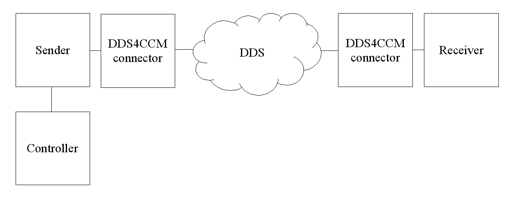

General
This tutorial explains how to use a DDS4CCM connector in
combination with a CCM component.
System
The system consists of three components:
- A sender component
- A receiver component
- A controller component
In this tutorial RTI DDS is used to transfer data from the sender to the receiver.
Since the sender and receiver are separate components, each use a DDS4CCM connector.
The exchanged data consists of a struct with the following members:
- color : represents the color of the shape.
- x : represents the location on the x-axis.
- y : represents the location on the y-axis
- shapesize : represents the size of the shape.
Separate DDS Topics are used to represent different shapes, i.e., Circle,
Square, and Triangle.
The color field is a DDS "key" value, which causes DDS to treat each color
as an unique "instance" of a shape.
Each of these instances is registered with DDS and is independently
maintained in regards to Quality of Service (QoS).
The controller controls the location and size of the registered shape.
The sender registers a shape instance with DDS and transfers the data received
from the controller to DDS.
The receiver listens to DDS and receives the updates regarding the shapes data.

to-be-replaced
This tutorial runs in conjuntion with the RTI shapes demo, available for download from
http://www.rti.com/downloads/index.html .
Directory structure
The following convention is used:
- |--*_asm
: Directory contains an assembly.
- |--ports
: Directory contains common IDL code for the assembly.
- |--*_comp
: Directory contains an component.
- |--
ports
: Directory contains common IDL code for the component.
- |--
src
: Directory contains the IDL and *_exec-files for the component.
File naming convention
The following convention is used:
- *_defn.idl - These files will contain definitions,
like enumerations, constants and so on
Typically located in *_asm/ports.
- *_msg.idl - These files will contain the messages (data structure)
send by DDS.
Typically located in *_asm/ports.
- *_conn.idl - These files will contain the connector
declarations.
Typically located in *_asm/ports.
- *_obj.idl - These files will contain the interfaces between
components.
Typically located in *_asm/*_comp/ports.
- *_comp.idl - These files will contain the component declaration.
Typically located in *_asm/*_comp/src.
Additional conventions
- MPC files are located in the same directory as the IDL and executor
files.
- Files that were generated by the TAO IDL compiler or the RTI DDS gen
compiler should be located in a subdirectory. In this tutorial the name
of this subdirectory is "GeneratedCode".